Processes: technology, storage, trade, supply, demand, import, export
Source:vignettes/articles/processes.Rmd
processes.RmdProcesses are the model elements that move and
convert commodities. energyRt has seven of them, and every one has a
draw() method that renders a schematic of its inputs,
outputs, auxiliary commodities and key coefficients.
| Process | Role | Main commodity flow |
|---|---|---|
supply |
domestic source of a commodity | → out |
demand |
final consumption (a sink) | in → |
import |
purchase from the rest of the world | → out |
export |
sale to the rest of the world | in → |
trade |
move a commodity between regions | in ↔︎ out (per region) |
storage |
shift a commodity across time | in → → out |
technology |
convert input commodities into outputs | in → use → activity → out |
The process family
A one-line example and its diagram for each of the simpler processes.
supply
A source of a commodity, with an availability bound and a cost (see the autoplot article for the by-year view of the same data).
SUP_COA <- newSupply(
name = "SUP_COA", desc = "Coal supply", commodity = "COA", unit = "PJ",
reserve = data.frame(region = "R1", res.up = 2e5),
availability = data.frame(region = "R1", year = NA_integer_, slice = "ANNUAL",
ava.up = 1e3, cost = 10))
draw(SUP_COA)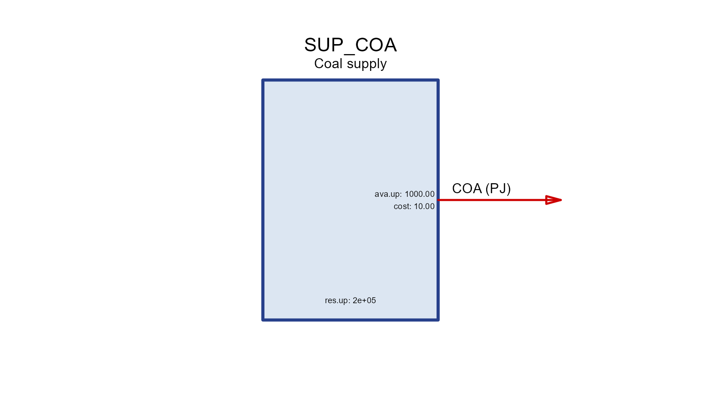
demand
A commodity sink; dem is the demanded quantity over
years/slices.
DEM_ELC <- newDemand(
name = "DEM_ELC", desc = "Electricity demand", commodity = "ELC", unit = "GWh",
dem = data.frame(region = "R1", year = c(2020, 2050), slice = "ANNUAL",
dem = c(100, 300)))
draw(DEM_ELC)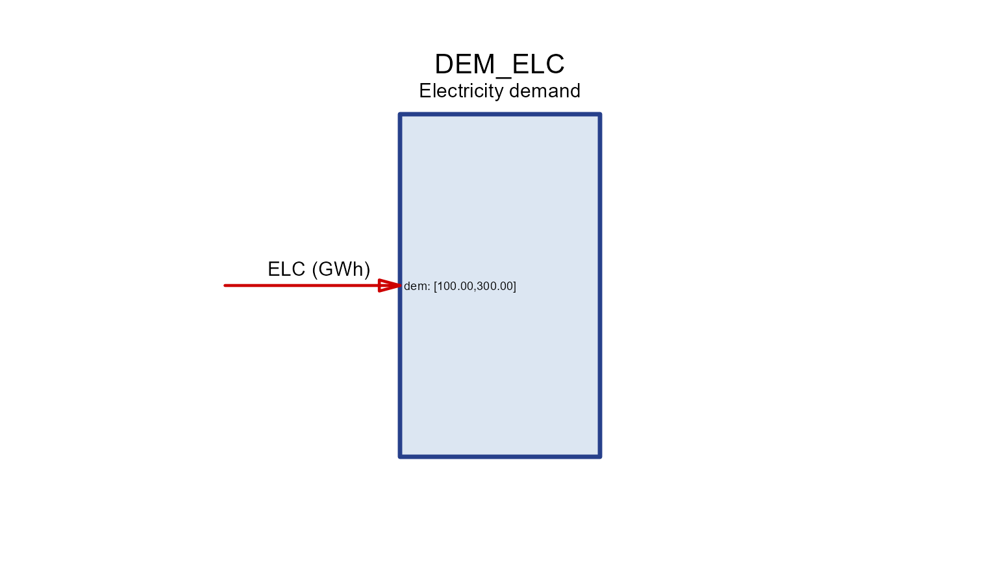
import / export
Trade with the “rest of the world” at a price, bounded
by imp.* / exp.*.
IMP_GAS <- newImport(
name = "IMP_GAS", desc = "Gas import", commodity = "GAS", unit = "PJ",
imp = data.frame(region = "R1", year = c(2020, 2050), price = 6, imp.up = 500))
draw(IMP_GAS)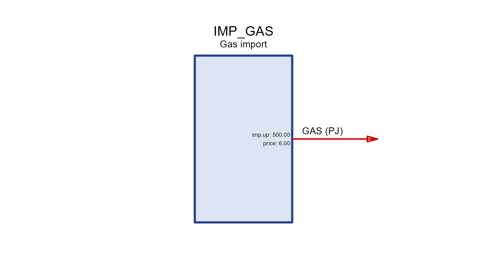
EXP_OIL <- newExport(
name = "EXP_OIL", desc = "Oil export", commodity = "OIL", unit = "Mt",
exp = data.frame(region = "R1", year = c(2020, 2050), price = 500, exp.up = 100))
draw(EXP_OIL)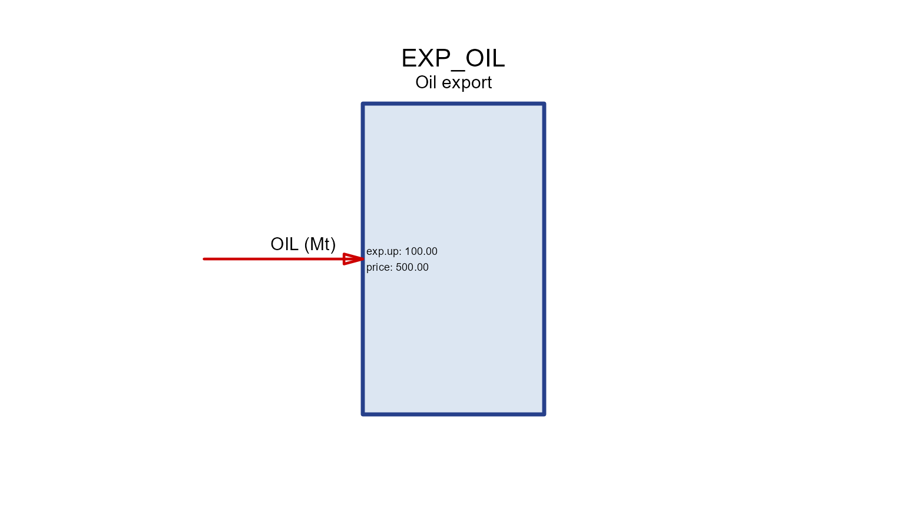
trade
Moves a commodity along routes (src →
dst) between regions with a transport efficiency
teff. draw() shows the flows for one node at a
time.
PIPE <- newTrade(
name = "PIPE", desc = "Gas pipeline", commodity = "GAS",
routes = data.frame(src = c("R1", "R2"), dst = c("R2", "R3")),
trade = data.frame(src = c("R1", "R2"), dst = c("R2", "R3"), teff = c(0.97, 0.96)))
draw(PIPE, node = "R2") # imports from R1, exports to R3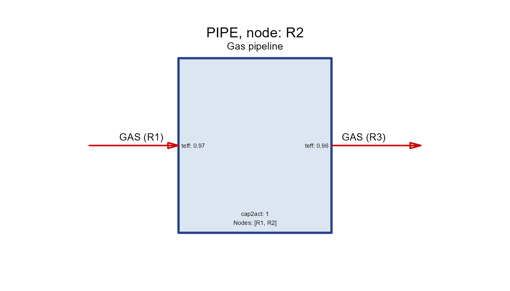
storage
Shifts a commodity across time. seff holds the
charging/discharging/holding efficiencies
(inpeff/outeff/stgeff) and
cap2stg is the storage duration.
STG_ELC <- newStorage(
name = "STG_ELC", desc = "Battery", commodity = "ELC",
seff = data.frame(inpeff = 0.9, outeff = 0.9, stgeff = 0.999),
cap2stg = 4, # 4 hours of storage per unit power
aux = data.frame(acomm = "LITHIUM", unit = "kt"),
aeff = data.frame(acomm = "LITHIUM", ncap2ainp = 0.25)) # material per new capacity
draw(STG_ELC)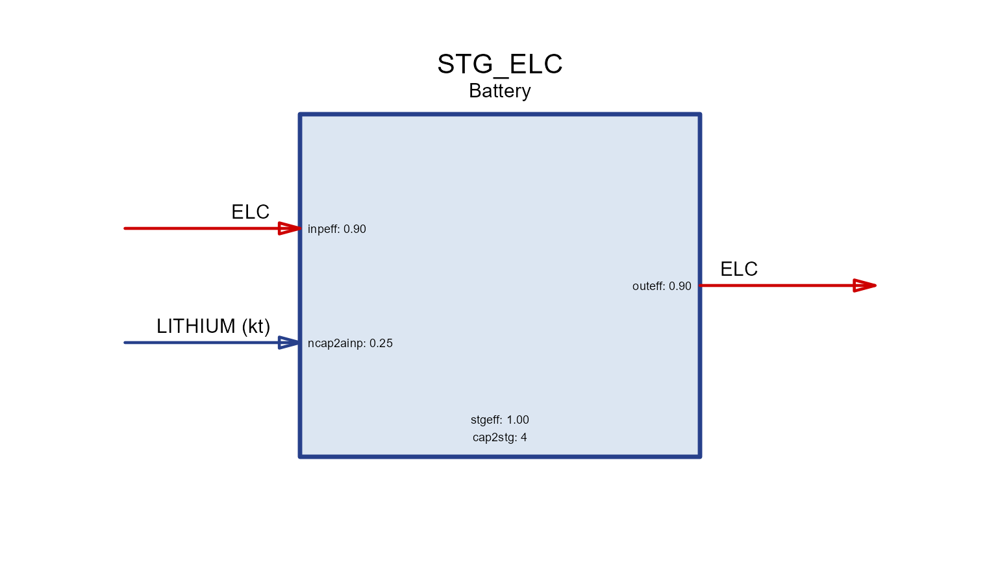
Anatomy of a technology
A technology converts input commodities
into output commodities. Read its diagram left-to-right
through four internal stages:
input(s) ──▶ use ──▶ activity ──▶ output(s)
cinp2use use2cact cact2cout-
cinp2use— how much of a common use each unit of a commodity input provides (e.g. converting fuels to a common energy basis). -
use2cact— use to the technology’s activity (the central variable that all costs, availability and capacity are tied to). -
cact2cout— activity to each output commodity (efficiency / yield). All three default to1.
BOILER <- newTechnology(
name = "BOILER", desc = "Gas boiler",
input = data.frame(comm = "GAS", unit = "PJ"),
output = data.frame(comm = "HEAT", unit = "PJ"),
ceff = data.frame(comm = c("GAS", "HEAT"),
cinp2use = c(1, NA),
cact2cout = c(NA, 0.9)), # 90% efficiency
cap2act = 1)
draw(BOILER)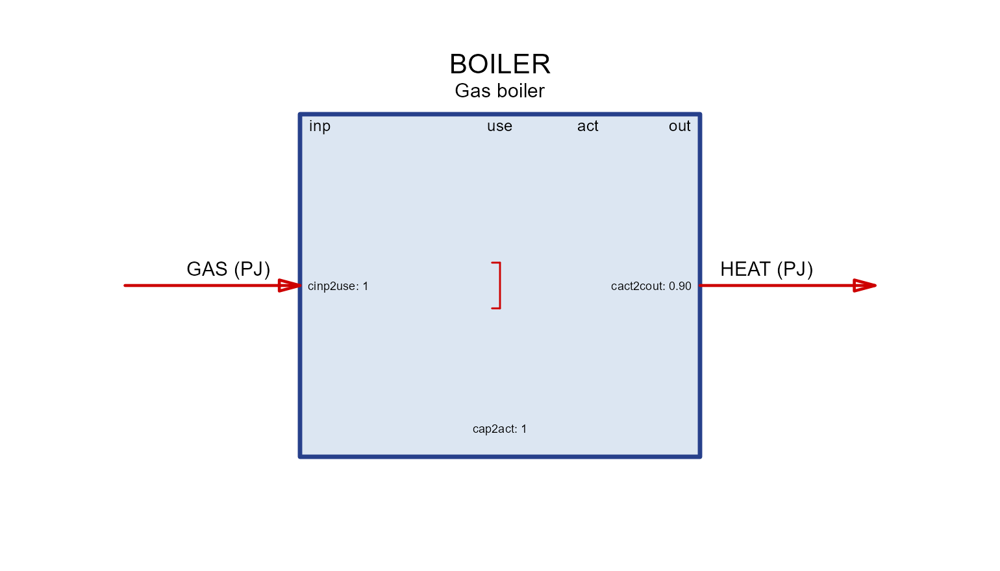
The four column headers in the box (inp,
use, act, out) are exactly these
stages; each coefficient is printed next to the flow it scales.
Groups and shares
When several commodities are interchangeable on the input (or output)
side, put them in a group. A group is converted to
use once (via ginp2use in geff), and
each member’s contribution is bounded by a share
(share.lo/share.up/share.fx).
cinp2ginp converts each commodity into the group’s common
unit.
CHP <- newTechnology(
name = "CHP", desc = "Co-firing plant (coal + biomass)",
input = data.frame(comm = c("COA", "BIO"), group = "fuel", unit = "PJ"),
output = data.frame(comm = "ELC", unit = "GWh"),
group = data.frame(group = "fuel", desc = "Blended fuel", unit = "PJ"),
geff = data.frame(group = "fuel", ginp2use = 1),
ceff = data.frame(comm = c("COA", "BIO", "ELC"),
cinp2ginp = c(1, 1, NA),
cact2cout = c(NA, NA, 0.4),
share.up = c(1.0, 0.3, NA)), # at most 30% biomass
cap2act = 8.76)
draw(CHP)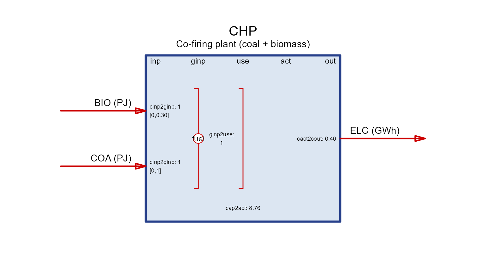
The share range is drawn in square brackets next to each grouped commodity.
Activity, capacity and units
Everything a technology does is measured by its
activity. Installed capacity limits
the maximum activity through the scalar
cap2act:
-
cap2act— “how much product (activity, or output commodity if identical) is produced per unit of capacity”. For a power plant with capacity inGW,cap2act = 8.76gives a maximum activity of8.76 GWhperGWper year (8760 h, scaled to the cost/energy units in use). - Capacity itself is bounded in the
capacityslot:stock(pre-existing),cap.lo/up/fx(total),ncap.lo/up/fx(new builds) andret.lo/up/fx(retirement). Availability factorsaf/afsbound activity within capacity.
Capacity in input vs. output units
Because capacity is tied to activity, whether it is
expressed in input or output units depends on where
you place the efficiency. Keep cinp2use = 1 and put the
loss on the output (cact2cout = 0.9) and activity tracks
the input — so capacity is in fuel-input units. Move
the efficiency to the input side instead and capacity becomes an
output rating:
# capacity rated on OUTPUT (e.g. a 1 GW_e turbine): activity == output
BOILER_out <- newTechnology(
name = "BOILER_out", desc = "Boiler rated by heat output",
input = data.frame(comm = "GAS", unit = "PJ"),
output = data.frame(comm = "HEAT", unit = "PJ"),
ceff = data.frame(comm = c("GAS", "HEAT"),
cinp2use = c(1 / 0.9, NA), # efficiency on the input side
cact2cout = c(NA, 1)), # activity == heat output
cap2act = 1)
draw(BOILER_out)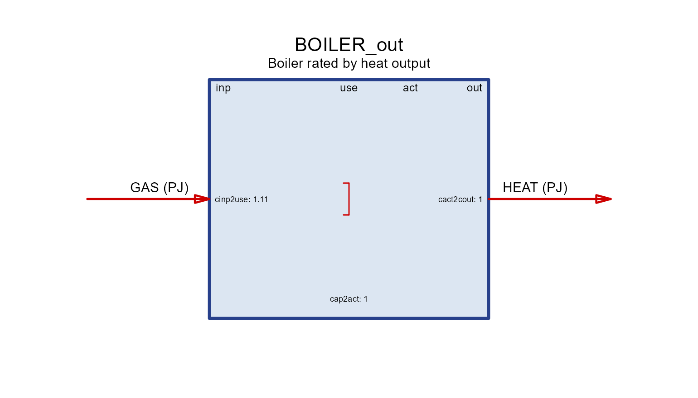
Both boilers have the same 90% efficiency; they differ only in what a unit of capacity means (fuel input vs. heat output).
Auxiliary commodities
Auxiliary commodities are extra flows tracked
alongside the main conversion — emissions, land, water, critical
materials, by-products. They are declared in aux and linked
in aeff by a coefficient named
<driver>2a<out|inp>:
- the driver is what scales the flow:
cinp(commodity input),cout(output),act(activity),cap(installed capacity),ncap(new capacity), or storage terms; -
…2aoutproduces the aux commodity (emissions, land, by-products);…2ainpconsumes it (materials, energy).
Each tab isolates one driver on the same base technology
(GAS → ELC).
aux_tech <- function(param, value, acomm = "AUX", unit = "unit") {
aeff <- data.frame(acomm = acomm, stringsAsFactors = FALSE)
aeff[[param]] <- value
newTechnology(
name = paste0("TECH_", param), desc = paste0("aux via ", param),
input = data.frame(comm = "GAS", unit = "PJ"),
output = data.frame(comm = "ELC", unit = "GWh"),
ceff = data.frame(comm = c("GAS", "ELC"), cinp2use = c(1, NA), cact2cout = c(NA, 0.4)),
aux = data.frame(acomm = acomm, unit = unit),
aeff = aeff)
}act2aout
Produced per unit of activity — the usual way to
attach combustion CO2.
draw(aux_tech("act2aout", 56, "CO2", "kt"))cout2aout
Produced per unit of output commodity.
draw(aux_tech("cout2aout", 0.02, "CO2", "kt"))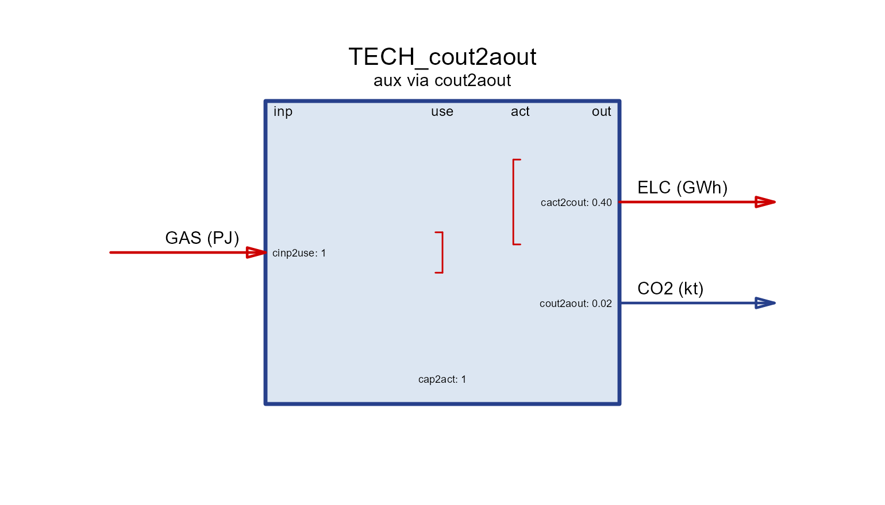
cinp2aout
Produced per unit of input commodity (e.g. process emissions from a feedstock).
draw(aux_tech("cinp2aout", 0.05, "CO2", "kt"))cap2aout
Produced per unit of installed capacity (e.g. land occupied while the plant stands).
draw(aux_tech("cap2aout", 10, "LAND", "km2"))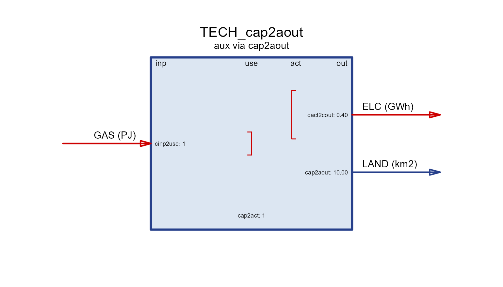
ncap2aout
Produced per unit of new capacity (one-off, e.g. construction emissions).
draw(aux_tech("ncap2aout", 3, "CO2", "kt"))act2ainp
Consumed per unit of activity (e.g. water or electricity used to run).
draw(aux_tech("act2ainp", 0.1, "WATER", "Mm3"))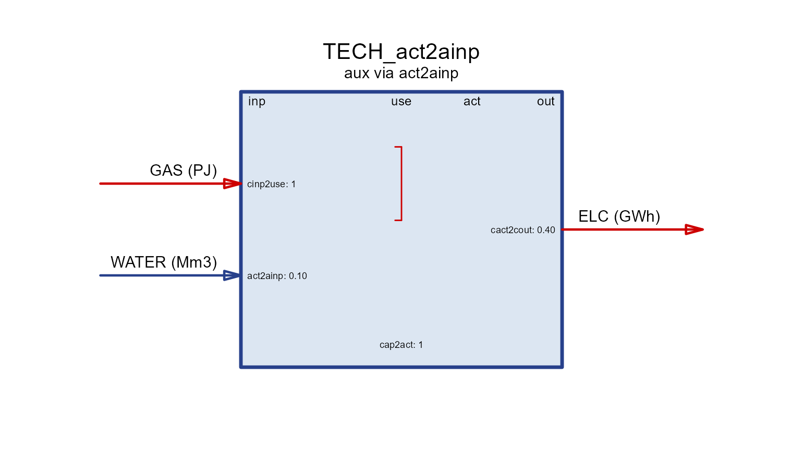
cap2ainp
Consumed per unit of capacity — a stock of material tied up in the plant.
draw(aux_tech("cap2ainp", 4, "STEEL", "kt"))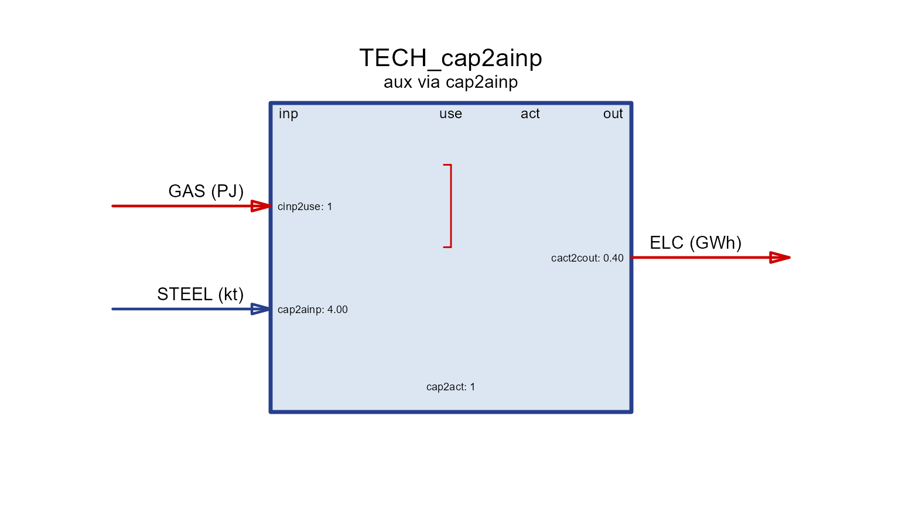
ncap2ainp
Consumed per unit of new capacity — materials used to build (e.g. lithium per GWh of battery, as in the storage example above).
draw(aux_tech("ncap2ainp", 0.25, "LITHIUM", "kt"))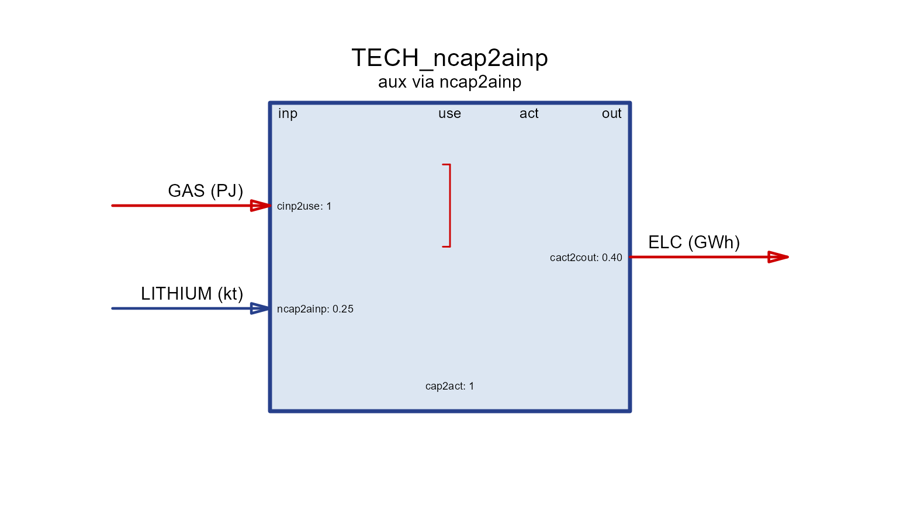
Timeframe (operating frequency)
A technology operates at a timeframe — the level of
the calendar it is dispatched on. By default it is the finest
(highest-frequency) timeframe among the commodities it uses: a
plant producing hourly ELC runs hourly, while one producing
only annual STEEL runs annually. Set
timeframe = to force a coarser level (e.g. run an
electricity plant at "SEASON" rather than
"HOUR" to shrink the model).
newTechnology(
name = "WIND", input = data.frame(comm = character()),
output = data.frame(comm = "ELC", unit = "GWh"),
timeframe = "HOUR") # dispatch hourly (else inferred from commodities)See also
-
Autoplot — the by-year
(
supply/demand/import/export) plots of the same objects. -
?draw,?newTechnology,?newStorage,?newTrade. - The Utopia and Hello World articles for these processes inside a full model.